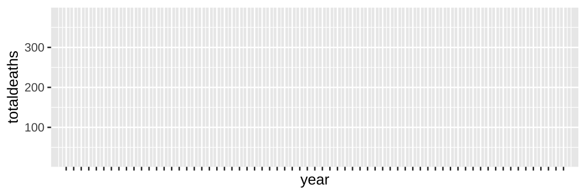
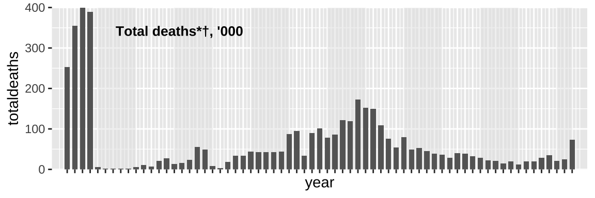
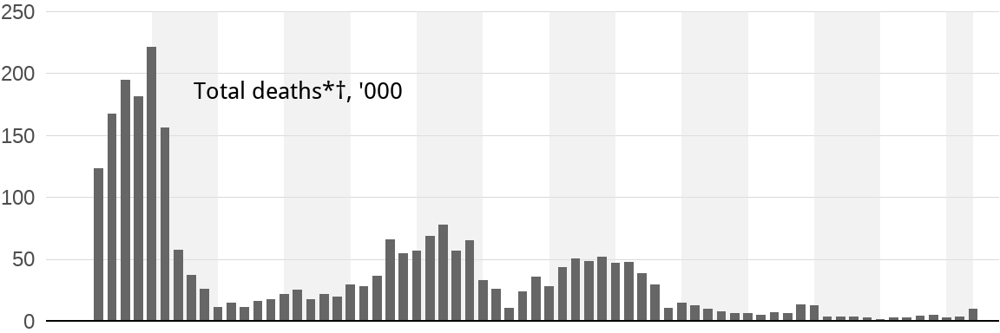
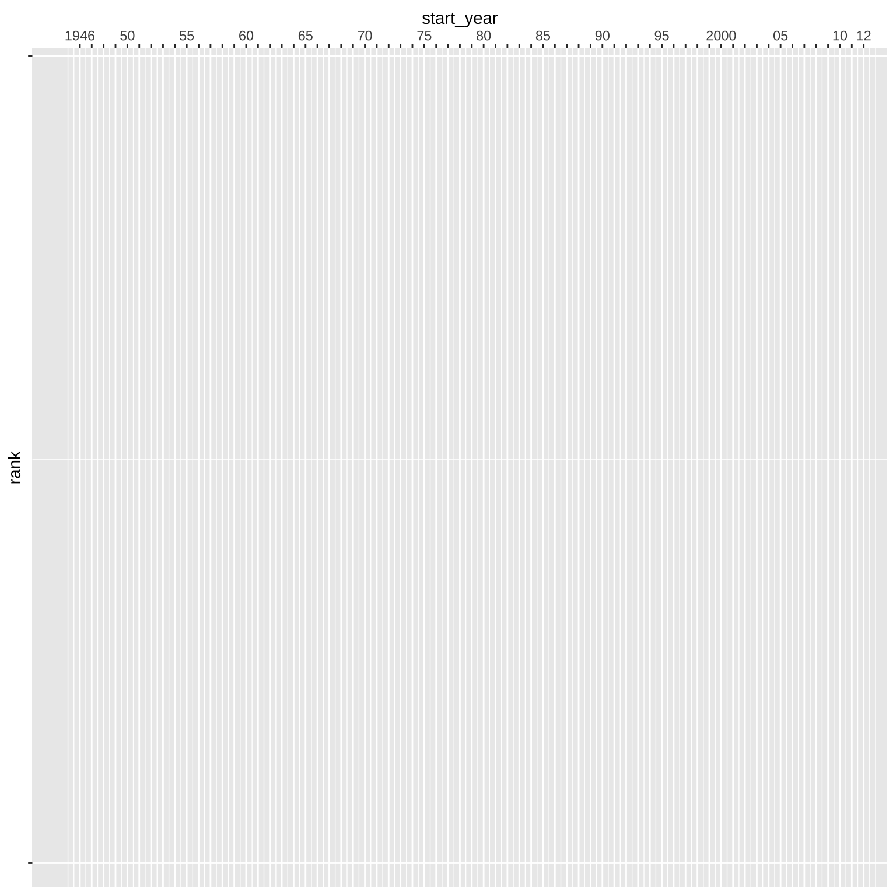
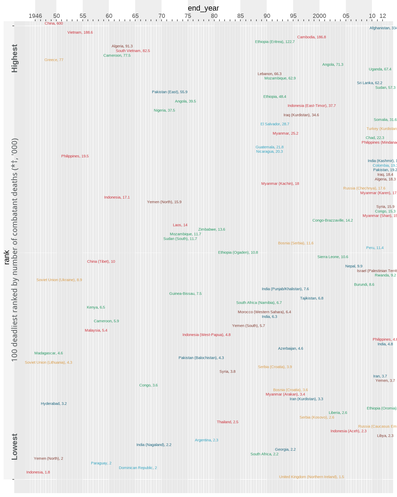
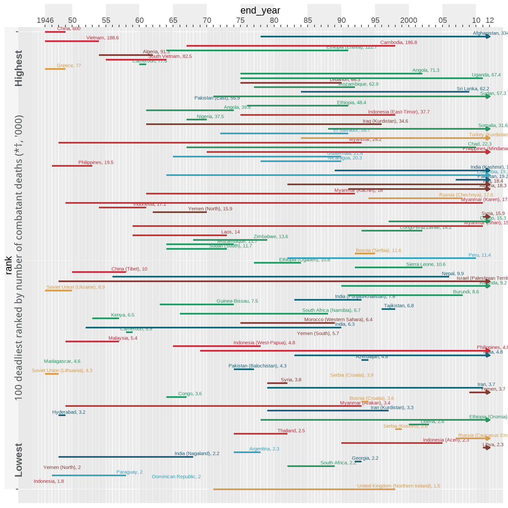
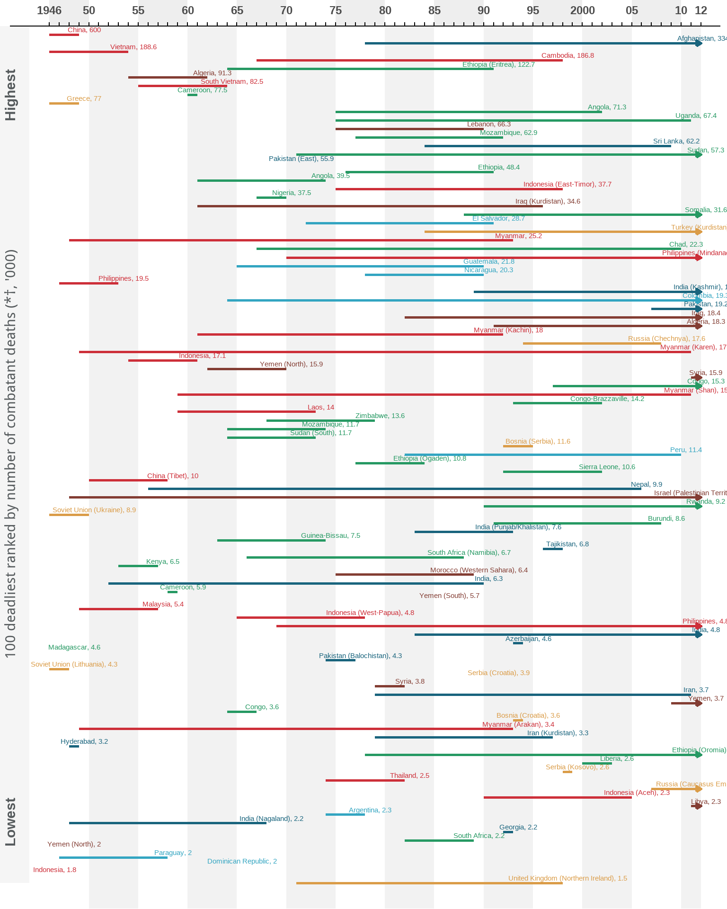
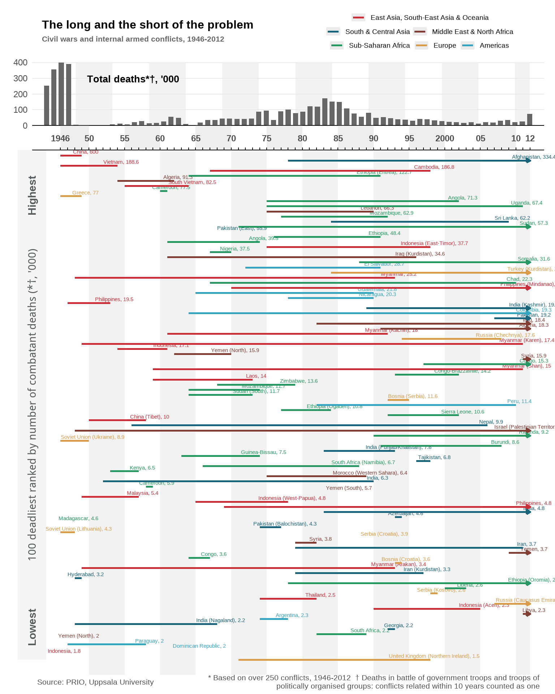
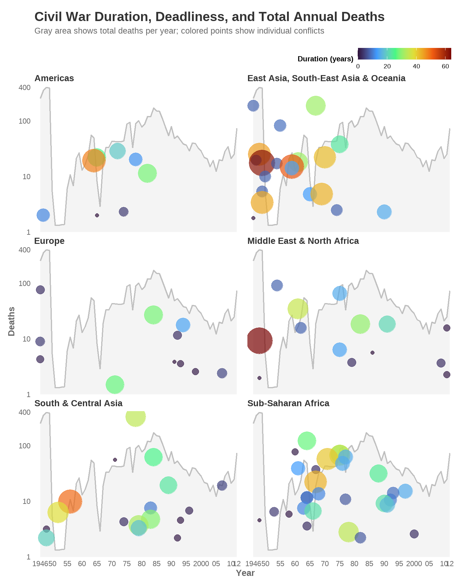

Introduction
Background
The Economist introduced this graph on civil wars in an article on the duration and deadliness of civil wars. The graph visualizes the length of the 100 deadliest civil wars and internal armed conflicts from 1946-2012, as well as the battle death in total each year and for each of the 100 conflicts. It is based on data from the UCDP/PRIO Armed Conflict data set.
Most recently this data was used in another Economist article on the deadliest conflicts of the year in 2023, where the main takeaway was that the most documented conflicts might not always be the deadliest.
Original graph
The original graph consists of two plots. One plot on the top showing total deaths for all civil wars per year from 1946-2012, with year on the x-axis and death toll on the y-axis. The other plot visualizes the duration and deadliness of the top 100 deadliest civil wars from 1946-2012. the y-axis represents the death toll rank, while the x-axis is the exact same as in the top plot with years. The lines represent each civil war and the length of them shows the duration of the conflict. Moreover, the colors represent the region and the numbers on the labels beside the state name is deaths in thousands for that exact conflict.
The graph is trying to convey the deadliness and duration of civil wars from post-war times to modern times. By combining information on total deaths over time with details about individual conflicts, it allows the reader to see both broad trends and specific examples. In this way, the graph tries to connect changes in global conflict over time with the severity and duration of individual civil wars.
The main reason for deciding on this graph is because it tries to show a lot of interesting information in a visual way. However, the original version includes so much data that it becomes cluttered and hard to interpret. The goal of this project was therefore to recreate the graph and then improve it, to show that one can still communicate the main information by reducing and simplifying, and in fact make the visualization easier to read.

Data preparation
Loading packages
To start of I began with loading the necessary packages for data processing and visualization.
The tidyverse package provides the foundations for essential packages like dplyr and ggplot2. I used dplyr to clean, filter, and manipulate my data. For creating my visualizations i used ggplot2.
The cowplot package was used to help with the composition of the different parts of the plot. Two key function were used, get_legend() extracted individual legend components to create a custom three-row legend, and ggdraw() combined with draw_label() constructed the footer containing citations and explanatory notes.
The readxl package enabled loading of Excel-formatted data from the PRIO Battle Deaths Data set. While, the ggrepel helped with positioning the lables so they would not overlap in the improvement of the plot.
Finally, the patchwork package was used to complete the final graph by combining the five separate part, the title, legend, death plot, civil war plot, and footer together.
Getting the data
To replicate the original visualization’s battle death statistics from 1946-2012, I integrated two data sets, the PRIO Battle Deaths Dataset covering 1946-1988 and the Uppsala Conflict Data Program (UCDP) data set extending through 2012. I loaded both datasets using read.csv() and read_excel() respectively, then filtered each to include only civil wars, which was coded as type 3 and 4. For Uppsala data, I grouped by year and summed best death estimates across all conflicts, converting to thousands. The PRIO data required additional preprocessing to handle potential duplicate conflict-year entries, so I first grouped by conflict ID and year to extract maximum death estimates, then aggregated by year. I merged both datasets using full_join() and arranged chronologically to create a complete data set with PRIO data providing historical coverage from 1946-1988 and Uppsala data covering recent decades through 2012.
It has to be noted that my calculations of battle deaths differ from the original graph, with some years by about 150,000 deaths. The differences likely come from how the original authors grouped related conflicts within a 10-year period, how overlapping or long-lasting conflicts were combined to avoid double-counting, and possible use of different data versions or additional sources. They may also have used their own methods to handle uncertainty in death estimates.
battledeaths <- read.csv("BattleDeaths_v25_1_conf.csv")
battledeaths_b <- read_excel("PRIO Battle Deaths Dataset 3.0.xls")
uppsaladeaths <- battledeaths |>
filter(type_of_conflict %in% c(3, 4), year <= 2012) |>
group_by(year) |>
summarise(totaldeaths = sum(bd_best, na.rm = TRUE) /1000)
priodeaths <- battledeaths_b |>
filter(type %in% c(3,4), between(year, 1946, 1988)) |>
group_by(id, year) |>
summarise(
conflict_deaths = max(bdeadbes, na.rm = TRUE),
.groups = "drop"
) |>
group_by(year) |>
summarise(
totaldeaths = sum(ifelse(conflict_deaths > 0, conflict_deaths, 0)) / 1000
)
deathtotal <- uppsaladeaths |>
full_join(priodeaths) |>
arrange(year) Creating new data set
For the data on the civil wars the original plot used data from the UCDP/PRIO Armed Conflict data set. I started of with cleaning the data set and joining it with the data sets on battle deaths. I quickly realized that their methods for defining a civil war in terms of duration and deaths were difficult to grasp, and even though i tried several times to replicate the same data as in the graph, I failed.
In the end, I decided on reading directly of the original graph and manually making a data set with the location, region, start year, end year, and number of deaths for the 100 deadliest conflicts from 1946-2012.
civil_wars_data <- data.frame(
location = c(
# East Asia, South-East Asia & Oceania (21 conflicts)
"China", "China (Tibet)", "Vietnam", "South Vietnam", "Cambodia",
"Indonesia", "Indonesia", "Indonesia (East-Timor)", "Indonesia (West-Papua)",
"Indonesia (Aceh)", "Myanmar", "Myanmar (Kachin)", "Myanmar (Karen)",
"Myanmar (Shan)", "Myanmar (Arakan)", "Philippines", "Philippines",
"Philippines (Mindanao)", "Laos", "Malaysia", "Thailand",
# South & Central Asia (17 conflicts)
"Afghanistan", "Sri Lanka", "Pakistan (East)", "Pakistan",
"Pakistan (Balochistan)", "India (Kashmir)", "India (Punjab/Khalistan)",
"India", "India", "India (Nagaland)", "Nepal", "Tajikistan",
"Azerbaijan", "Iran", "Iran (Kurdistan)", "Hyderabad", "Georgia",
# Sub-Saharan Africa (31 conflicts)
"Ethiopia (Eritrea)", "Ethiopia", "Ethiopia (Ogaden)", "Ethiopia (Oromia)",
"Cameroon", "Cameroon", "Angola", "Angola", "Uganda", "Mozambique",
"Mozambique", "Sudan", "Sudan (South)", "Nigeria", "Somalia", "Chad",
"Congo", "Congo", "Congo-Brazzaville", "Madagascar", "Zimbabwe",
"Sierra Leone", "Liberia", "Rwanda", "Burundi", "Guinea-Bissau",
"Kenya", "South Africa", "South Africa (Namibia)",
# Middle East & North Africa (15 conflicts)
"Algeria", "Algeria", "Lebanon", "Iraq", "Iraq (Kurdistan)",
"Yemen (North)", "Yemen (North)", "Yemen (South)", "Yemen",
"Syria", "Syria", "Israel (Palestinian Territories)",
"Morocco (Western Sahara)", "Libya",
# Europe (11 conflicts)
"Greece", "Turkey (Kurdistan)", "Russia (Chechnya)",
"Russia (Caucasus Emirate)", "Bosnia (Serbia)", "Bosnia (Croatia)",
"Soviet Union (Ukraine)", "Soviet Union (Lithuania)", "Serbia (Croatia)",
"Serbia (Kosovo)", "United Kingdom (Northern Ireland)",
# Americas (7 conflicts)
"El Salvador", "Guatemala", "Nicaragua", "Colombia", "Peru",
"Argentina", "Paraguay", "Dominican Republic"
),
start_year = c(
# East Asia, South-East Asia & Oceania
1946, 1950, 1946, 1955, 1967,
1954, 1946, 1975, 1965, 1990,
1948, 1961, 1949, 1959, 1949,
1947, 1969, 1970, 1959, 1949, 1974,
# South & Central Asia
1978, 1984, 1971, 2007,
1974, 1989, 1983, 1983, 1952,
1948, 1956, 1996, 1993, 1979,
1979, 1948, 1992,
# Sub-Saharan Africa
1964, 1976, 1977, 1978,
1960, 1958, 1961, 1975, 1975,
1977, 1964, 1971, 1964, 1967,
1988, 1967, 1997, 1964, 1993,
1948, 1968, 1992, 2000, 1990,
1991, 1963, 1953, 1982, 1966,
# Middle East & North Africa
1954, 1991, 1975, 1982, 1961,
1962, 1948, 1986, 2009,
2011, 1979, 1948,
1975, 2011,
# Europe
1946, 1984, 1994, 2007,
1992, 1993, 1946, 1946,
1991, 1998, 1971,
# Americas
1972, 1965, 1978, 1964,
1982, 1974, 1947, 1965
),
end_year = c(
# East Asia, South-East Asia & Oceania
1949, 1958, 1954, 1964, 1998,
1961, 1946, 1998, 1978, 2005,
1993, 1992, 2011, 2011, 1993,
1953, 2012, 2012, 1973, 1957, 1982,
# South & Central Asia
2012, 2009, 1971, 2012,
1977, 2012, 1993, 2012, 1990,
1968, 2006, 1998, 1994,
2011, 1997, 1949, 1993,
# Sub-Saharan Africa
1991, 1991, 1984, 2012,
1961, 1959, 1974, 2002, 2011,
1992, 1974, 2012, 1973, 1970,
2012, 2010, 2012, 1967, 2002,
1948, 1979, 2002, 2003, 2012,
2008, 1974, 1957, 1989, 1988,
# Middle East & North Africa
1962, 2012, 1990, 2012, 1996,
1970, 1948, 1986, 2012,
2012, 1982, 2012,
1989, 2012,
# Europe
1949, 2012, 2008, 2012,
1995, 1994, 1950, 1948,
1991, 1999, 1998,
# Americas
1991, 1990, 1990, 2012,
2010, 1978, 1958, 1965
),
deaths_thousands = c(
# East Asia, South-East Asia & Oceania
600.0, 10.0, 188.6, 82.5, 186.8, 17.1, 1.8, 37.7, 4.8, 2.3,
25.2, 18.0, 17.4, 15.0, 3.4, 19.5, 4.8, 22.1, 14.0, 5.4, 2.5,
# South & Central Asia
334.4, 62.2, 55.9, 19.2, 4.3, 19.3, 7.6, 4.8, 6.3, 2.2,
9.9, 6.8, 4.6, 3.7, 3.3, 3.2, 2.2,
# Sub-Saharan Africa
122.7, 48.4, 10.8, 2.8, 77.5, 5.9, 39.5, 71.3, 67.4, 62.9,
11.7, 57.3, 11.7, 37.5, 31.6, 22.3, 15.3, 3.6, 14.2, 4.6,
13.6, 10.6, 2.6, 9.2, 8.6, 7.5, 6.5, 2.2, 6.7,
# Middle East & North Africa
91.3, 18.3, 66.3, 18.4, 34.6, 15.9, 2.0, 5.7, 3.7, 15.9,
3.8, 9.3, 6.4, 2.3,
# Europe
77.0, 27.0, 17.6, 2.4, 11.6, 3.6, 8.9, 4.3, 3.9, 2.6, 1.5,
# Americas
28.7, 21.8, 20.3, 19.3, 11.4, 2.3, 2.0, 2.0
),
region = c(
# East Asia, South-East Asia & Oceania (21)
rep("East Asia, South-East Asia & Oceania", 21),
# South & Central Asia (17)
rep("South & Central Asia", 17),
# Sub-Saharan Africa (29)
rep("Sub-Saharan Africa", 29),
# Middle East & North Africa (14)
rep("Middle East & North Africa", 14),
# Europe (11)
rep("Europe", 11),
# Americas (8)
rep("Americas", 8)
),
stringsAsFactors = FALSE
) |>
arrange(desc(deaths_thousands))Preparing the data
After getting all the data i needed I prepared it to be plotted. First of all i created a new variable containing the label for each civil war with the location and number of deaths per thousand.
plot_data <- civil_wars_data |>
mutate(
rank = row_number(),
label = paste0(location, ", ", deaths_thousands)
)For the colors of the regions I used a color identificator on the original graph to get the right code. I then made a data frame with the colors to be used later in the plot and the legend.
region_colors <- c(
"East Asia, South-East Asia & Oceania" = "#cd2f39",
"South & Central Asia" = "#19647d",
"Middle East & North Africa" = "#833d33",
"Sub-Saharan Africa" = "#269963",
"Europe" = "#da9c48",
"Americas" = "#33a5c1"
)Then it was time for the grey background line indicating every 5th year. I started of with blablabla
grey_xmin <- c(1950, 1960, 1970, 1980, 1990, 2000, 2010)
grey_xmax <- c(1955, 1965, 1975, 1985, 1995, 2005, 2012)
grey_strips <- data.frame(
xmin = grey_xmin,
xmax = grey_xmax
)
add_decade_shading <- function() {
geom_rect(
data = grey_strips,
aes(xmin = xmin, xmax = xmax, ymin = -Inf, ymax = Inf),
inherit.aes = FALSE,
fill = "grey90",
alpha = 0.5
)
}Graph replication
Death plot
deathplot <- ggplot(deathtotal) +
aes(x = year, y = totaldeaths) +
scale_y_continuous(
breaks = seq(0, 400, 100),
labels = c(0, 100, 200, 300, 400)
) +
scale_x_continuous(
breaks = 1946:2012,
labels = NULL,
) +
coord_cartesian(xlim=c(1944,2014), expand=FALSE)
print(deathplot)
deathplot <- deathplot +
add_decade_shading() +
geom_col(fill = "gray40",
width = 0.7) +
annotate(
"text",
x = 1949,
y = 400,
label = "Total deaths*†, '000",
hjust = -0.2,
vjust = 3,
size = 3.5,
fontface = "bold",
color = "black",
family = "sans"
)
print(deathplot)
deathplot <- deathplot +
theme_minimal() +
theme(
axis.title.x = element_blank(),
axis.text.x = element_blank(),
axis.ticks.x = element_blank(),
# Text styling
axis.text.y = element_text(size = 9),
axis.title.y = element_blank(),
# Background colors
panel.background = element_rect(fill = "white", color = NA),
plot.background = element_rect(fill = "white", color = NA),
# Grid lines
panel.grid.major.y = element_line(color = "grey85", linewidth = 0.3),
panel.grid.minor = element_blank(),
panel.grid.major.x = element_blank(),
# Add bottom border line
axis.line.x = element_line(color = "black", linewidth = 0.5),
# Margins
plot.margin = margin(t = 5, b = 5)
)
print(deathplot)
Civil war plot
civilwar_plot <- ggplot(plot_data,
aes(x = start_year, y = rank, colour = region)) +
scale_x_continuous(
breaks = 1946:2012,
labels = c("1946","", "", "", "50", "", "", "", "", "55","","","","", "60", "","","","", "65","","","","", "70","","","","", "75","","","","", "80","","","","", "85",
"","","","","90","","","","", "95","","","","", "2000","","","","", "05","","","","", "10", "", "12"),
position = "top",
) +
scale_y_reverse(
breaks = c(1, 100),
labels = NULL
) +
coord_cartesian(
xlim = c(1942, 2014),
ylim = c(0, 103),
expand = FALSE,
clip = "off"
) +
scale_color_manual(values = region_colors, name = NULL)
print(civilwar_plot)
civilwar_plot <- civilwar_plot +
add_decade_shading() +
annotate("rect",
xmin=1940, xmax=1944,
ymin=0,ymax=100,
alpha=0.4,
fill="grey90") +
annotate(
"text",
x = 1942,
y = 50,
label = "100 deadliest ranked by number of combatant deaths (*†, '000)",
hjust = 0.5,
angle = 90,
size = 4,
color = "#565b5d",
fontface = "bold"
) +
annotate(
"text",
x = 1942,
y = 90,
label = "Lowest",
angle = 90,
hjust = 1,
size = 4,
color = "#565b5d",
fontface = "bold"
) +
annotate(
"text",
x = 1942,
y = 5,
label = "Highest",
angle = 90,
hjust = 1,
size = 4,
color = "#565b5d",
fontface = "bold"
) +
annotate("rect",
xmin=c(1946, 1955, 1965, 1975, 1985, 1995, 2005),
xmax = c(1950, 1960, 1970, 1980, 1990, 2000, 2010),
ymin=c(-5), ymax=c(0),
alpha=0.2, fill="darkgrey")+
# Labels
geom_text(
aes(x = end_year, label = label),
hjust = 0.5,
vjust = -0.5,
size = 2,
nudge_x = 0.5,
check_overlap = FALSE,
show.legend = FALSE
)
print(civilwar_plot)
civilwar_plot <- civilwar_plot +
geom_segment(aes(xend = end_year, yend = rank),
linewidth = 1,
data = filter(plot_data, end_year < 2012),
show.legend = FALSE) +
# Segments with arrows for ongoing conflicts
geom_segment(aes(xend = end_year, yend = rank),
linewidth = 1,
data = filter(plot_data, end_year == 2012),
arrow = arrow(length = unit(0.15, "cm"),
ends = "last",
type = "closed"),
show.legend = FALSE)
print(civilwar_plot)
civilwar_plot <- civilwar_plot +
theme_minimal() +
theme(panel.grid.major = element_blank(),
panel.grid.minor = element_blank(),
axis.text.y = element_text(face = "bold", size = 9),
axis.title.y = element_blank(),
axis.ticks.y = element_blank(),
axis.title.x.top = element_blank(),
axis.text.x.top = element_text(face = "bold", size = 9),
axis.ticks.x.top = element_line(color = "black", linewidth = 0.5),
axis.line.x.top = element_line(color = "black", linewidth = 0.5),
plot.margin = margin(t = 5, r = 5, l = 8),
legend.position = "none")
print(civilwar_plot)
Combining the plots
Footer
left_caption <- "Source: PRIO, Uppsala University"
right_caption <- "* Based on over 250 conflicts, 1946-2012 † Deaths in battle of government troops and troops of\npolitically organised groups: conflicts related within 10 years counted as one"
footer <- ggdraw() +
draw_label(left_caption, x = 0.01, hjust = 0, size = 8, color = "gray30", fontfamily = "sans") +
draw_label(right_caption, x = 0.99, hjust = 1, size = 8, color = "gray30", fontfamily = "sans")Legend
# Row 1: East Asia alone
legend_row1 <- get_legend(
ggplot(data.frame(x = 1, y = 1, region = "East Asia, South-East Asia & Oceania"),
aes(x, y, color = region)) +
geom_line(linewidth = 1) +
scale_color_manual(values = region_colors, name = NULL) +
theme(
text = element_text(family = "sans"),
legend.position = "top",
legend.direction = "horizontal",
legend.text = element_text(size = 7),
legend.key.width = unit(0.5, "cm"),
legend.key.height = unit(0.3, "cm"),
legend.spacing.x = unit(0.2, "cm")
)
)
# Row 2: South & Central Asia + Middle East & North Africa
legend_row2 <- get_legend(
ggplot(data.frame(x = 1:2, y = 1:2,
region = c("South & Central Asia", "Middle East & North Africa")),
aes(x, y, color = region)) +
geom_line(linewidth = 1) +
scale_color_manual(values = region_colors,
limits = c("South & Central Asia", "Middle East & North Africa"),
name = NULL) +
theme(
text = element_text(family = "sans"),
legend.position = "top",
legend.direction = "horizontal",
legend.text = element_text(size = 7),
legend.key.width = unit(0.5, "cm"),
legend.key.height = unit(0.3, "cm"),
legend.spacing.x = unit(0.2, "cm")
)
)
# Row 3: Sub-Saharan Africa + Europe + Americas
legend_row3 <- get_legend(
ggplot(data.frame(x = 1:3, y = 1:3,
region = c("Sub-Saharan Africa", "Europe", "Americas")),
aes(x, y, color = region)) +
geom_line(linewidth = 1) +
scale_color_manual(values = region_colors,
limits = c("Sub-Saharan Africa", "Europe", "Americas"),
name = NULL) +
theme(
text = element_text(family = "sans"),
legend.position = "top",
legend.direction = "horizontal",
legend.text = element_text(size = 7),
legend.key.width = unit(0.5, "cm"),
legend.key.height = unit(0.3, "cm"),
legend.spacing.x = unit(0.2, "cm")
)
)
custom_legend <- plot_grid(
legend_row1,
legend_row2,
legend_row3,
ncol = 1,
align = "v",
rel_heights = c(0.5, 0.5, 0.5)
)Title
title_plot <- ggplot() +
labs(title = "The long and the short of the problem",
subtitle = "Civil wars and internal armed conflicts, 1946-2012") +
theme_void() +
theme(
text = element_text(family = "sans"),
plot.title = element_text(face = "bold", size = 12, hjust = 0, color = "black" ),
plot.subtitle = element_text(size = 8, color = "gray40", hjust = 0, face = "bold"),
plot.margin = margin(5, 5, 5, 10)
)Final plot
finishedplot <- (wrap_elements(title_plot) | wrap_elements(custom_legend)) /
deathplot /
civilwar_plot /
wrap_elements(footer) +
plot_layout(
heights = c(0.4, 0.6, 5, 0.03),
widths = c(1.5, 1)
)
print(finishedplot)
Graph improvement
I am still working on the graph improvement. My most important thoughts on it is that the original graph tries to visualize too much information, so an improvement would be to limit the data visualized while still keeping it informative. I want the improved version to keep the death plot as contextual framing, but simplify the lower panel to reduce cognitive overload.
I will still need to work with the grey lines here, get all the data points right and then find a good way to visualize the deaths per conflict as well. Have to fix it so all facets work with the same scale for y-axis so the data is not misleading. I have been trying to get deaths as size but looks like the geom_smooth is causing some trouble there. Maybe the solution is to not work with region colors but with a color scale for deaths and then label the deadliest ones.
Adjusting the data
duration_data <- plot_data |>
mutate(
duration = end_year - start_year,
) |>
group_by(region) |>
mutate(
is_deadliest = deaths_thousands == max(deaths_thousands),
is_longest = duration == max(duration),
# Create label
conflict_label = case_when(
is_deadliest & is_longest ~ label,
is_deadliest ~ label,
is_longest ~ label,
TRUE ~ NA_character_
)
) |>
ungroup()Here is another suggestion for improvement. I think this can look good when the deadliest conflicts get labels as well as the longest ones, can also label the peaks for the total deaths.
Second_improvement <- ggplot() +
geom_vline(
xintercept = c(1946, 1950, 1960, 1970, 1980, 1990, 2000, 2010),
color = "gray70",
linewidth = 0.4,
alpha = 0.6
) +
# Line for total deaths per year
geom_area(data = deathtotal,
aes(x = year, y = totaldeaths),
fill = "gray85",
alpha = 0.3) +
geom_line(data = deathtotal,
aes(x = year, y = totaldeaths),
color = "gray60",
linewidth = 0.8,
alpha = 0.6) +
# Points for individual conflicts
geom_point(data = duration_data,
aes(x = start_year, y = deaths_thousands,
size = duration, colour = deaths_thousands),
alpha = 0.7) +
# Add labels for deadliest and longest conflicts
geom_text_repel(
data = filter(duration_data, !is.na(conflict_label)),
aes(x = start_year, y = deaths_thousands, label = conflict_label),
size = 2.5,
color = "black",
box.padding = 0.5,
point.padding = 0.3,
segment.color = "gray40",
segment.size = 0.3,
max.overlaps = 20,
min.segment.length = 0
) +
geom_text(
data = data.frame(
x = c(1948, 1955, 1965, 1975, 1985, 1995, 2005, 2011),
y = 450,
label = c("40s", "50s", "60s", "70s", "80s", "90s", "00s", "10s")
),
aes(x = x, y = y, label = label),
color = "gray50",
size = 3,
vjust = 0,
inherit.aes = FALSE
) +
scale_color_gradient(
low = "#fee5d9",
high = "#99000d",
name = "Deaths\n(thousands)",
trans = "log10",
limits = c(1, 600),
breaks = c(1, 10, 50, 100, 600),
labels = scales::comma
) +
scale_size_continuous(range = c(2, 15), name = "Duration\n(years)") +
scale_y_log10(
labels = scales::comma,
breaks = c(1, 10, 100, 600)
) +
scale_x_continuous(
breaks = seq(1946,2012,10)
) +
coord_cartesian(xlim = c(1944, 2014), ylim = c(-4, 800), expand = FALSE) +
facet_wrap(~region, ncol = 2) +
labs(
title = "Civil War Duration, Deadliness, and Total Annual Deaths",
subtitle =
"Gray area shows total deaths per year; colored points show individual conflict;
The bigger and the darker the point is the longer and deadlier the conflict is.
The longest and the deadliest conflict in each region is labeled",
x = NULL,
y = "Deaths (log)"
) +
theme_minimal() +
theme(
text = element_text(family = "sans"),
panel.background = element_blank(),
plot.background = element_blank(),
panel.grid.major = element_blank(),
panel.grid.minor = element_blank(),
strip.background = element_blank(),
strip.text = element_text(
color = "gray20",
face = "bold",
size = 11,
hjust = 0,
margin = margin(b = 10)
),
plot.title = element_text(size = 16, face = "bold", color = "gray20", margin = margin(b = 10)),
plot.subtitle = element_text(size = 10, color = "gray40", margin = margin(b = 0)),
axis.title = element_text(color = "gray40", size = 11, face = "bold"),
axis.text = element_text(color = "gray40", size = 9),
legend.position = "top",
legend.justification = "right",
legend.direction = "horizontal",
legend.box = "vertical",
legend.title = element_text(size = 9, face = "bold"),
legend.text = element_text(size = 6),
legend.background = element_blank(),
legend.spacing.y = unit(0.2, "cm"),
plot.margin = margin(t = 30, r = 15, b = 5, l = 10)
)
second_improved <- Second_improvement / footer +
plot_layout(
heights = c(2, 0.1)
)
print(second_improved)
Conclusion
Distill is a publication format for scientific and technical writing, native to the web.
Learn more about using Distill at https://rstudio.github.io/distill.